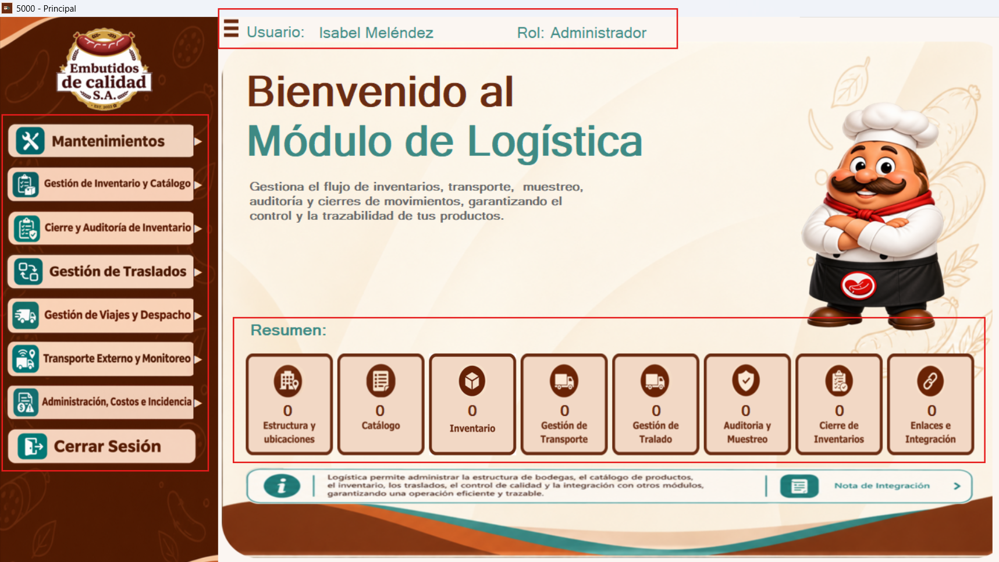
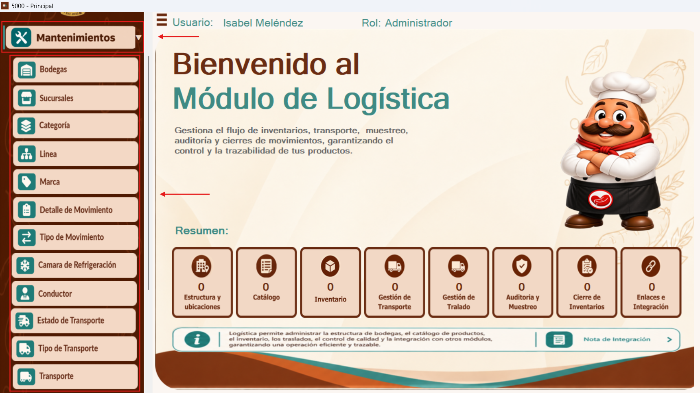
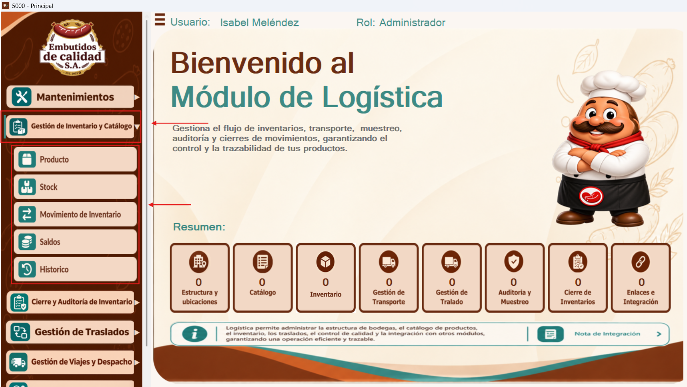
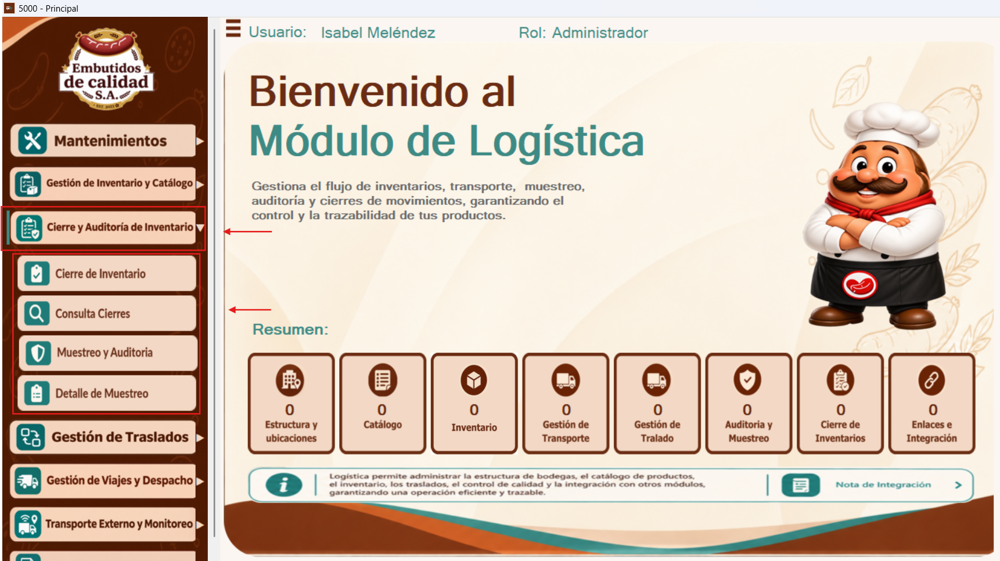
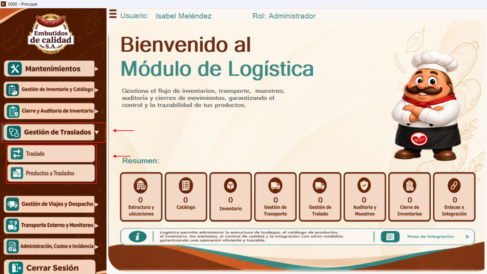
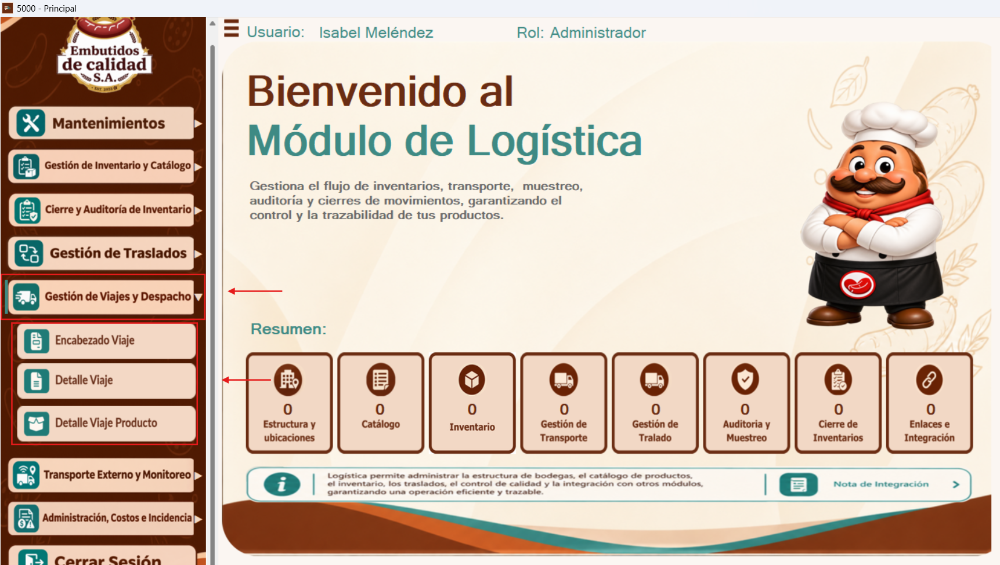
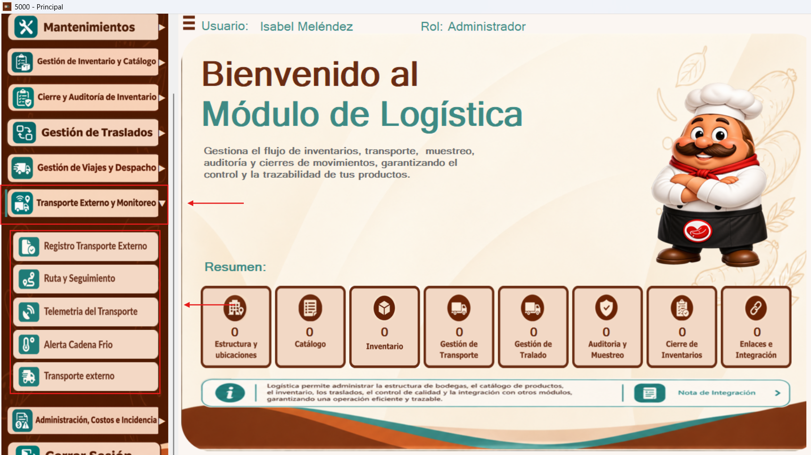
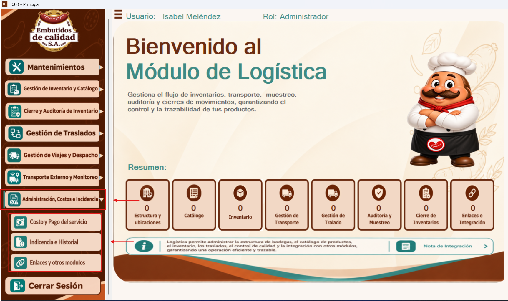
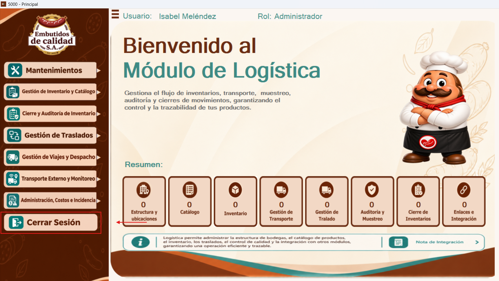

Este manual describe las secciones del menú principal del módulo de Logística y explica cómo acceder a sus diferentes formularios.
Al ingresar al módulo de Logística, se muestra la pantalla principal de bienvenida. En la parte superior aparecen el nombre del usuario que inició sesión y el rol asignado, información que permite identificar las credenciales activas. A la izquierda se encuentran los botones desplegables que dan acceso a las distintas funciones. En la zona inferior se presenta un resumen general de las áreas del módulo, con indicadores de registros y una nota informativa sobre la gestión logística.

La opción Mantenimientos despliega los accesos a los formularios utilizados para administrar datos básicos del módulo. Entre ellos se encuentran Bodegas, Sucursales, Categoría, Línea, Marca, Detalle de Movimiento, Tipo de Movimiento, Cámara de Refrigeración, Conductor, Estado de Transporte, Tipo de Transporte y Transporte. Para abrir un mantenimiento, se selecciona su nombre en el menú desplegado.

Al desplegar Gestión de Inventario y Catálogo, se muestran las opciones Producto, Stock, Movimiento de Inventario, Saldos e Histórico. Estas permiten acceder a los formularios relacionados con el registro y consulta de productos, existencias, movimientos y su historial. Seleccione la opción correspondiente para abrir la ventana que desea utilizar.

La sección Cierre y Auditoría de Inventario contiene los accesos Cierre de Inventario, Consulta Cierres, Muestreo y Auditoría y Detalle de Muestreo. Desde este menú se ingresa a las funciones de cierre de un período, consulta de cierres anteriores y revisión o registro de auditorías de inventario, según las opciones disponibles.

El menú Gestión de Traslados permite acceder a Traslado y Productos a Traslados. Estas opciones agrupan las ventanas relacionadas con la gestión de traslados y los productos asociados a cada operación. Para continuar, haga clic en el formulario requerido.

La sección Gestión de Viajes y Despacho despliega Encabezado Viaje, Detalle Viaje y Detalle Viaje Producto. Estas opciones permiten acceder a la información general de los viajes, sus detalles y los productos relacionados. Elija la opción que corresponda al proceso que desea consultar o registrar.

Al seleccionar Transporte Externo y Monitoreo, se muestran los accesos Registro Transporte Externo, Ruta y Seguimiento, Telemetría del Transporte, Alerta Cadena Frío y Transporte externo. Desde este apartado se accede a los formularios vinculados con el transporte externo, el seguimiento de recorridos y el monitoreo de las condiciones del traslado.

El apartado Administración, Costos e Incidencia contiene las opciones Costo y Pago del servicio, Incidencia e Historial y Enlaces y otros módulos. Estos accesos permiten abrir las ventanas relacionadas con costos, incidencias registradas y conexiones con otros módulos del sistema.

En la parte inferior del menú lateral se encuentra el botón Cerrar Sesión. Esta opción se utiliza para finalizar la sesión del usuario actual y salir del acceso activo al módulo. Antes de utilizarla, se recomienda guardar cualquier información pendiente en los formularios abiertos.
